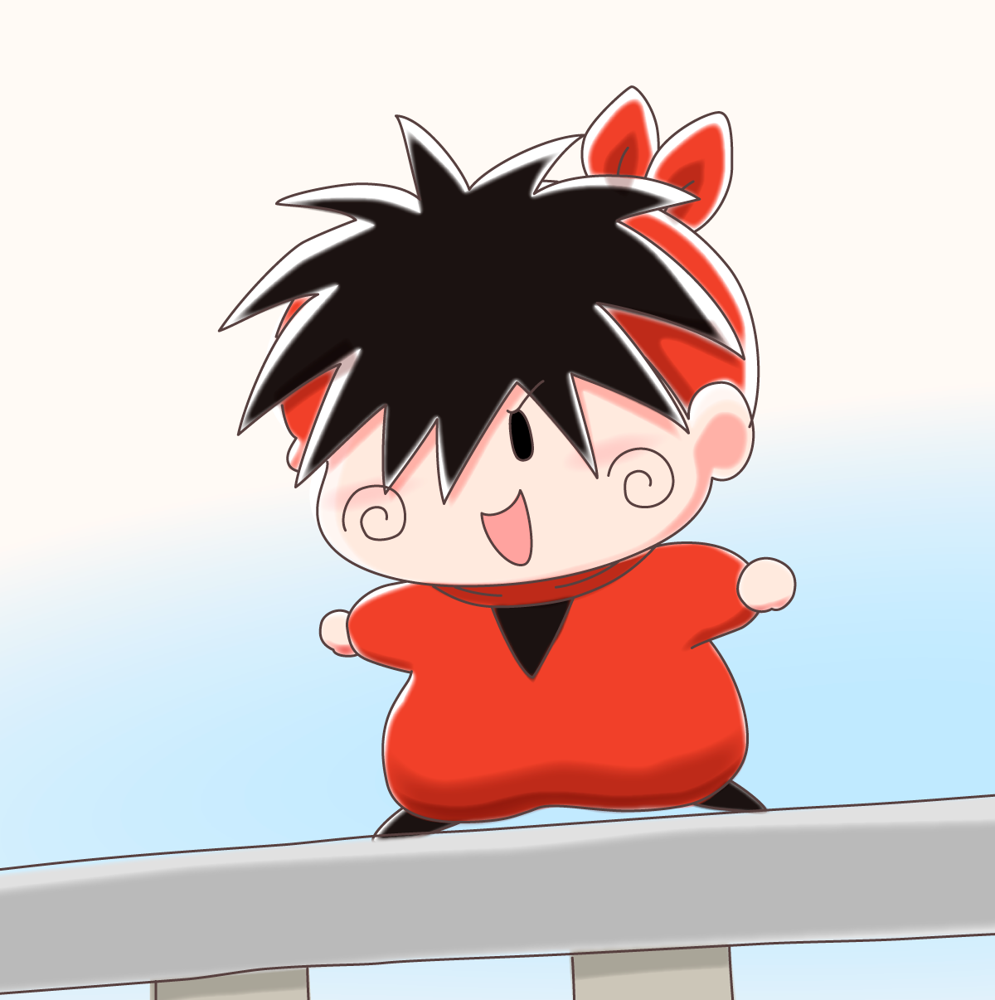

２０２４年の一番最初のミルモグッズ情報をX（旧Twitter）にて入手しました！
昨年ラバーマスコットを発売された株式会社フクヤさんより、カプセルトイ第２弾として『ミルモでポン！ まえがみクリップ 全５種』が発売予定とのことです。
初夏ごろより順次展開予定とのことで、５月頃にお店で見られるようになるのかな。
前回のラバーマスコットはあっという間に売り切れになったりもしたので、まえがみクリップも発売されたら速攻で入手が必要そうですね(^^)
今回のラインナップ、主要４妖精に加えてパピィちゃんが入っているのがポイント高いですね。
「何よ、あたちがいたら悪いワケ！？」とパピィはムルモに食ってかかりそう・・。
あとヤシチの表情がかわいい！
原作のどこかの場面の表情だと思いますが、「やいミルモ！」と颯爽と現れる日常を思い浮かべ、思わずささっとお絵描きしてしまいました（雑でごめんです、ヤシチくん）

後日購入したらいつものようにレポートしたいと思います。
✨🎵商品発売のお知らせ🎵✨
— 【公式】フクヤ｜プライズ・カプセルトイ (@fancy_fukuya) February 7, 2024
『#篠塚ひろむ』先生による
名作『#ミルモでポン』から
カプセルトイ第二弾が登場💕
まえがみクリップ（全５種）が
初夏ごろより順次展開予定です💫
続報をお楽しみに！#ミルモ #ちゃお pic.twitter.com/h7173s7kZD
(2024/2/11)